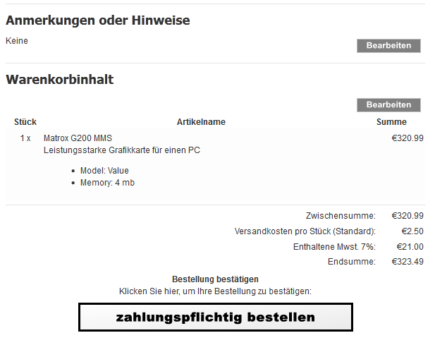

Dies ist eine Erweiterung für die Umsetzung der sogenannten "Buttonlösung" in Zen-Cart 1.5 deutsch
In der Zen-Cart Administration ist damit beim Bearbeiten eines Artikels unterhalb des Artikelnamens ein neues Zusatzfeld vorhanden, in dem die "wesentlichen Merkmale der Ware" eingetragen werden können:
Auf der letzten Seite des Bestellvorgangs werden die dort hinterlegten Merkmale dann in der Warenkorbinhaltsübersicht unterhalb des Artikelnamens angezeigt:
Enthalten sind auch geänderte Texte für die letzte Seite des Bestellvorgangs und ein passender Button.
Copyright dieser deutschen Anpassung/Anleitung für Zen-Cart 1.5 deutsch
(c) 2012 webchills (www.webchills.at)
Portions Copyright (c) 2003 osCommerce
Portions Copyright (c) 2003-2012 Zen Cart
This contribution is subject to version 2.0 of the GPL license available through the world-wide-web at the following url:
http://www.zen-cart-pro.at/license/2_0.txt
Für den Einbau dieses Moduls sollten Sie über folgende Werkzeuge verfügen:
1) Ein guter Texteditor
Damit ist nicht das in Windows enthaltene Notepad oder Microsoft Word gemeint.
Sie benötigen einen Texteditor, der utf-8 versteht und auch im Format utf-8 ohne BOM abspeichern kann.
Meine Empfehlung: UltraEdit (kostenlose 30 Tage Testversion verfügbar)
Ebenfalls gut geeignet ist der kostenlose Texteditor Notepad++
2) Ein Tool zum Vergleichen von Dateien
Bei der Installation dieses Moduls ist es erforderlich, dass Sie den Inhalt einiger Ihrer bestehenden Zen-Cart Dateien mit dem Inhalt der neuen Moduldateien vergleichen und die Änderungen zusammenführen ("mergen").
Meine Empfehlung: BeyondCompare (kostenlose 30 Tage Testversion verfügbar)
Ebenfalls gut geeignet ist das kostenlose Programm WinMerge
Empfehlung:
Dieses Modul erst in einem Testsystem einbauen und dort konfigurieren/testen und endgültig an die eigenen Wünsche anpassen.
Erst dann in einem Liveshop einsetzen! Sichern Sie unbedingt alle Dateien Ihres Shops per FTP und sichern Sie die Datenbank mit phpMyAdmin oder anderen geeigneten Tools!
Die Installation erfolgt in folgenden Schritten. Halten Sie diesen Ablauf ein!
1.
Die Datei install.sql im Ordner SQL mit einem Texteditor öffen und den Inhalt kopieren
2.
In der Zen-Cart Administration unter Tools > SQL Patches installieren ins Eingabefeld kopieren und absenden.
Dadurch wird die Tabelle products_description mit einem neuen Feld für die Artikelmerkmale erweitert.
Unter Konfiguration > Mein Shop wird ein neuer Menüpunkt angelegt, mit dem die Buttonlösung aus. und eingeschaltet werden kann.
3.
Neue Dateien des Moduls einspielen:
Im Ordner NEUE DATEIEN den Ordner DEINADMIN auf den Namen Ihres Adminverzeichnisses umbenennen. Dann in der vorgegebenen Struktur ins Zen-Cart Verzeichnis hochladen, dabei werden keine bestehenden Dateien überschrieben.
4.
Geänderte Dateien des Moduls einspielen:
Im Ordner GEAENDERTE DATEIEN alle Ordner namens DEINTEMPLATE auf das im Shop verwendete Template umbennen (z.B. viennabright, classic, ...). Den Ordner DEINADMIN auf den Namen Ihres admin Verzeichnisses umbenennen.
Wenn Sie Zen-Cart 1.5 gerade frisch installiert haben und noch keinerlei Änderungen an den Dateien vorgenommen haben, können Sie nun alle Dateien/Ordner aus dem Ordner GEAENDERTE DATEIEN in der vorgegebenen Struktur in die Zen-Cart Installation hochladen. Dabei werden dann etliche Dateien überschrieben.
Wenn Sie Zen-Cart 1.5 schon länger im Einsatz haben und schon einmal Änderungen an Dateien vorgenommen oder andere Module eingebaut haben, dann laden Sie die Dateien keinesfalls einfach hoch.
Vergleichen Sie alle Dateien im Ordner GEAENDERTE DATEIEN mit den entsprechenden Dateien in Ihrem Shop und nehmen Sie die Änderungen manuell per WinMerge oder BeyondCompare vor.
Dann spielen Sie die geänderten Dateien in der gezeigten Struktur ein.
5.
Überprüfen Sie unter Konfiguration > Mein Shop > Artikelmerkmale für Buttonlösung aktivieren ob diese Einstellung auf true steht
Nun können Sie bei jedem Artikel die wesentlichen Artikelmerkmale eintragen.
HINWEIS:
Da etliche Dinge in dieser "Buttonlösung" unklar formuliert bzw, noch nicht rechtlich geklärt sind:
Keine Haftung für eine Abmahnsicherheit durch diese Erweiterung!
Lassen Sie Ihren Shop von einem darauf spezialisierten Anwalt überprüfen!
1.
Die Datei uninstall.sql im Ordner SQL mit einem Texteditor öffen und den Inhalt kopieren
2.
Zen-Cart Administration öffnen und unter Tools > SQL Patches installieren den Inhalt ins Feld hineinkopieren und absenden.
3.
Alle von diesem Modul geänderten 1.5 Originaldateien wieder einspielen
Alle von diesem Modul neu angelegten Dateien vom Server löschen.
Download des Moduls:
www.zen-cart-pro.at/zcvb/forum/downloads.php
Supportforum zum Modul:
Sie finden dieses Modul nützlich?
Sie haben vom Support im Forum auf www.zen-cart-pro.at profitiert?
Unterstützen Sie die Weiterentwicklung der deutschen Zen-Cart Version.
Wir freuen uns über Spenden zur Finanzierung des Servers und der vBulletin-Lizenz: